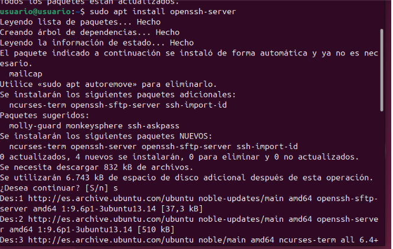
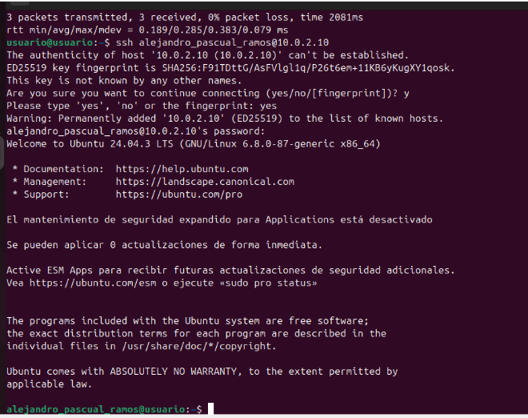
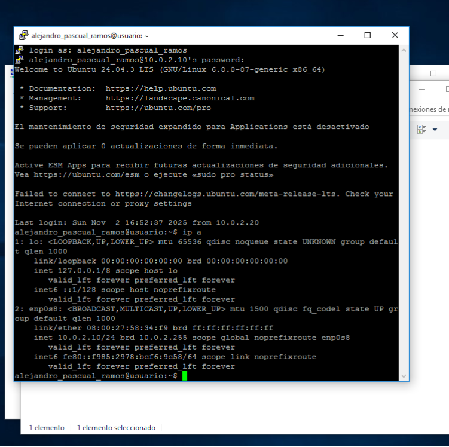
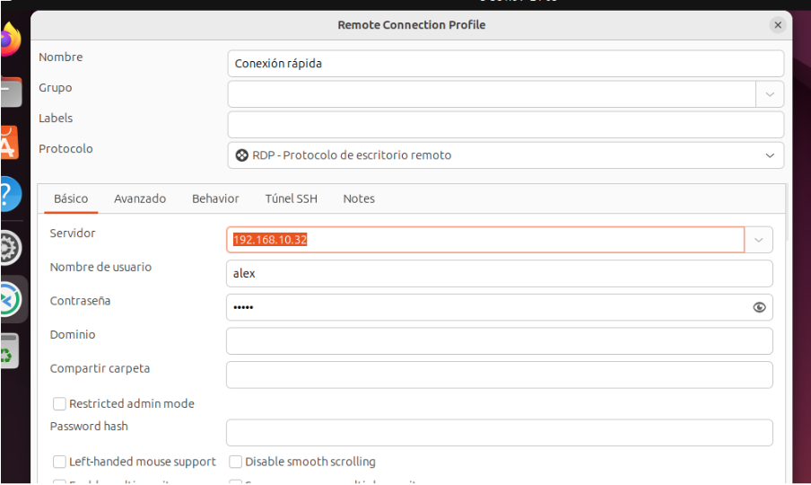
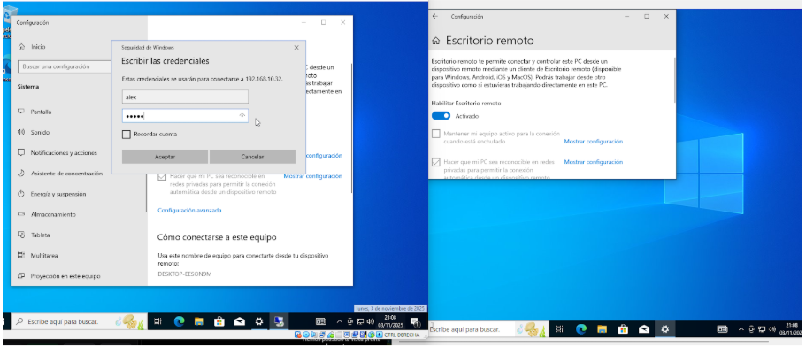
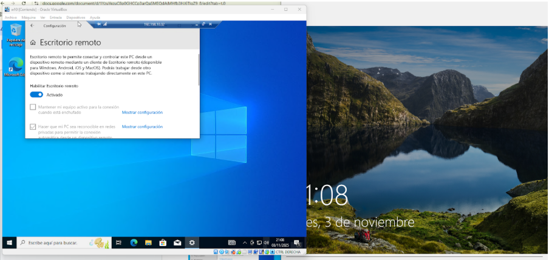
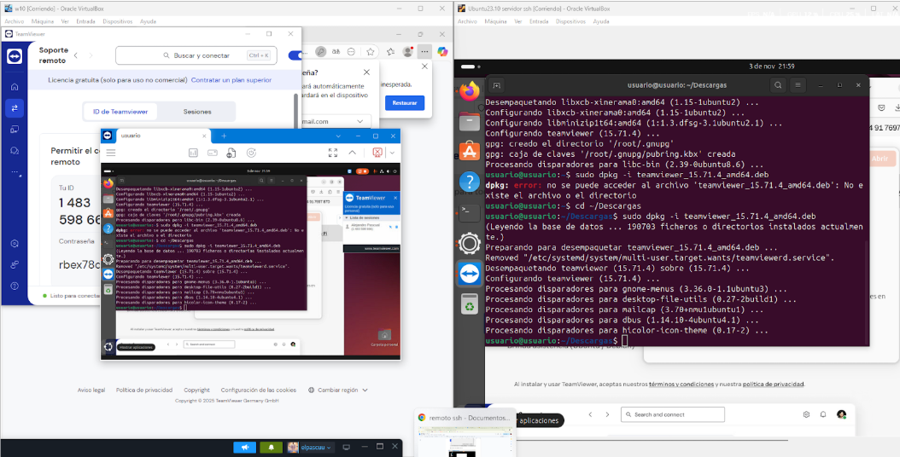
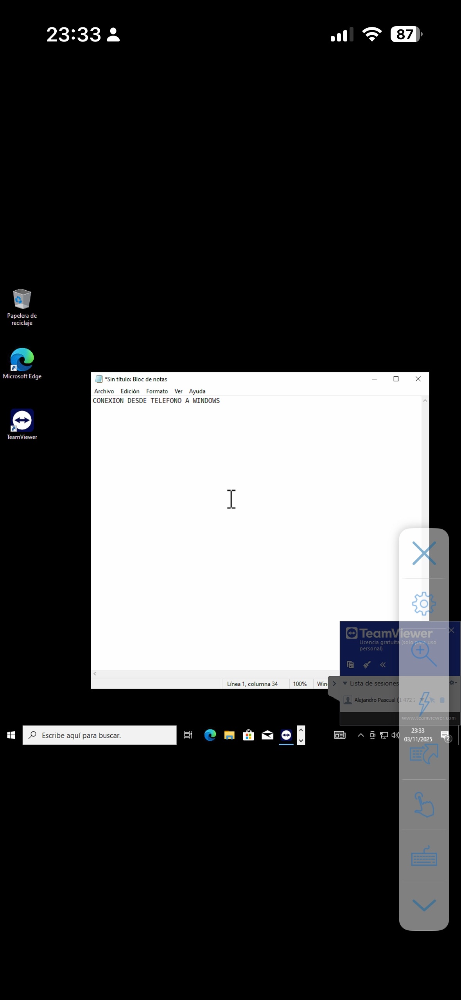

Práctica Terminales - Capturas de ejercicios
Bienvenido/a. Aquí tienes todas las capturas realizadas para la práctica de terminales.
Puedes agregar aquí instrucciones, observaciones o cualquier comentario explicativo sobre los ejercicios.
Consulta cada imagen para ver los pasos de instalación, conexiones y pruebas entre diferentes sistemas.

1. Descargar OpenSSH

2. SSH desde otro Linux

3. Entrar sin contraseña

4. Instalación Putty

5. Conexión Putty

6. Conexión Remmina

7. Configuración Remmina

8. Escritorio remoto contraseña

9. Escritorio remoto Windows

10. Instalación TeamViewer

11. Windows a Windows

12. Windows a Linux

13. Linux a Windows

14. Linux a Linux

15. Teléfono a Linux

16. Teléfono a Windows